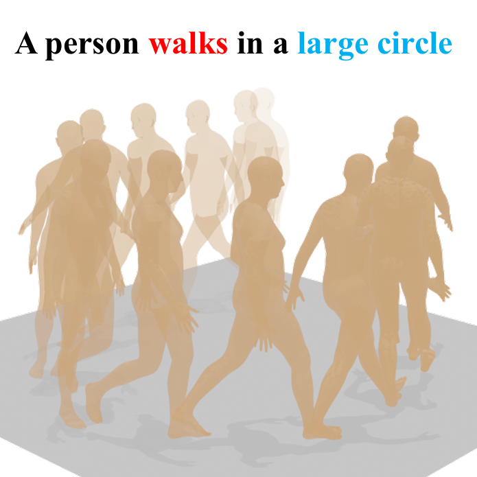

|
Xingyu Chen Currently, I am a developer toward physical AI and spatial computing. Previously, I obtained M.Sc degree from University College London in 2024. Prior to that, I received B.Sc degree from University of Cincinnati in 2023, and B.Eng degree from Chongqing University in 2022. |

|
ResearchParticularly, I am interested in high-fidelity representation for motion and scene. |
|

|
Text-driven Human Motion Generation with Motion Masked Diffusion Model
Xingyu Chen Arxiv preprint, 2024 [arXiv] A spatial-temporal mask strategy for text-driven human motion diffusion model. |
|
|
Gaussian Surfel Representation for Visual SLAM
Xingyu Chen Dissertation for master degree, 2024 [thesis] A master thesis on the Visual SLAM with a planer Gaussian surfel representation. |
CourseworkSome project design, code implementations and reproductions in the major courses. |
|
|
Robotic Sensing, Manipulation and Interaction
UCL COMP0129, 2023 [github] A geometry-based recognition, positioning and grasping for Franka Panda Arm in Gazebo. |
|
|
VR Game for Multi-player Online Helicopter Driving
UCL COMP0113, 2023 [github] A multiplayer real-time synchronous game for helicopter driving in Unity on Meta Quest2. |
EngineeringI also enjoy solving practical problems in product deployment and its engineering applications. |
|
Mobile robotics clusters for industrial routing inspection
MCC CISDI, 2021 I was involved and responsible for the LIDAR SLAM system and navigation frame in Agile Scout collaboration robotics. |
|
Visual servo robotics for metallurgical manufacturing industry
MCC CISDI, 2020 I was involved and responsible for the physical simulation and automated integrated control in ABB's robotic arm. |
Miscellanea |
 |
Waterbot's Notebook
To make my knowledge scalable, I maintain a digital blog to record what I do. [My mkdocs] |
This web template is from Jon Barron, the head icon is from 小熊貓, thank all! |